| Parameter | Details |
|---|---|
| Document Code | RWE-RCA-SOP-2026-V2.4 |
| Classification | RWE Internal · Operational & Engineering Technical Standard |
| Target Audience | Reliability Engineers, Offshore Wind Technicians, Plant Managers, Electrical/HV Specialists, HSE Leads, Quality Auditors, Station Directors |
| Standard Compliances | ISO 55001 (Asset Management), ISO 9001:2015, IEC 61025 (Fault Tree Analysis), IEC 60812 (FMEA), IEC 61850 Substation Standards |
| Repository & Live URL | https://neilmross81-debug.github.io/gridguard-rca/ |
| Version | Date | Author / Team | Summary of Changes |
|---|---|---|---|
| v1.0 | Jan 2026 | Asset Reliability Team | Initial GridGuard release with basic 5 Whys and local-first timeline. |
| v2.0 | Jun 2026 | Offshore HV Taskforce | Multi-site support, Ishikawa 6M Fishbone, SAP Notification tags. |
| v2.3 | Oct 2026 | Digital Operations Lead | Fault Tree Analysis (FTA), Swiss-Cheese Barrier Model, FMEA RPN matrix. |
| v2.4 | Nov 2026 | RWE Lead Systems Architect | Full RWE corporate rebranding, Microsoft SSO authentication, automated lost generation revenue formulas, and Outlook .ics export. |
The RWE-RCA Platform is an enterprise-grade investigation and incident intelligence application engineered specifically for RWE Generation and Renewables operating environments. Modern energy infrastructure—encompassing offshore windfarms, high-voltage offshore substation platforms (OSPs), CCGT thermal stations, and utility-scale battery energy storage systems (BESS)—demands an investigation platform that operates with absolute reliability even in bandwidth-restricted or disconnected offshore conditions.
The platform provides seamless Single Sign-On (SSO) integration with Microsoft Azure Active Directory (Office 365 / Windows SSO), alongside evaluation account credentials for isolated maintenance and auditing environments.
| Role | Permitted Operations | Typical Assignment |
|---|---|---|
| Global Admin | Full system governance, site provisioning, user permissions, global settings, webhook automation. | Lead Operations Reliability Manager, Systems Administrator |
| Site Admin / Lead | Create & edit investigations, assign CAPA owners, approve RCA stages, manage site personnel. | Offshore Substation Manager, Maintenance Strategy Lead |
| Lead Investigator | Author timeline, 5 Whys, fishbone, FTA, barrier, and FMEA models. Submit for technical review. | Senior HV Electrical Engineer, Mechanical Specialist |
| Auditor / Viewer | Read-only inspection, export formal PDF/Word/Excel reports, review closed audit dossiers. | HSE Compliance Inspector, Insurance Loss Adjuster |
The Executive Operations Dashboard provides immediate operational situational awareness for fleet leaders, station directors, and asset managers. The interface aggregates active investigations, financial/generation losses, and corrective action health across all offshore and onshore operating sites.
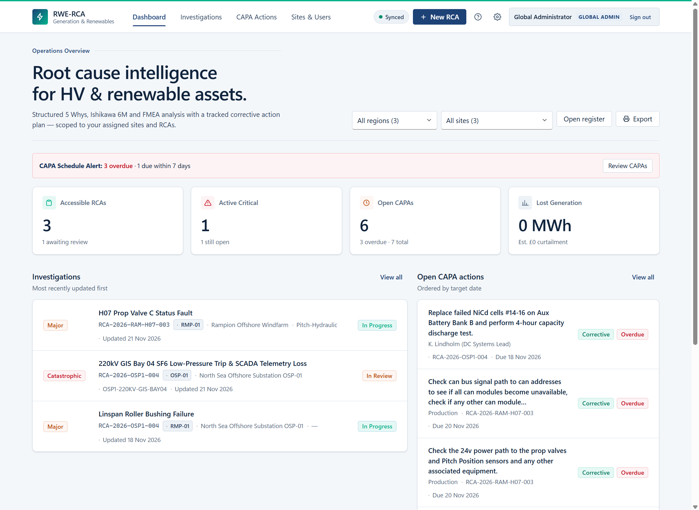
The Investigations Register serves as the centralized repository for all historical and active investigations across RWE operations. It is equipped with dynamic search, multi-site filtering, and SAP Plant Maintenance notification badges.
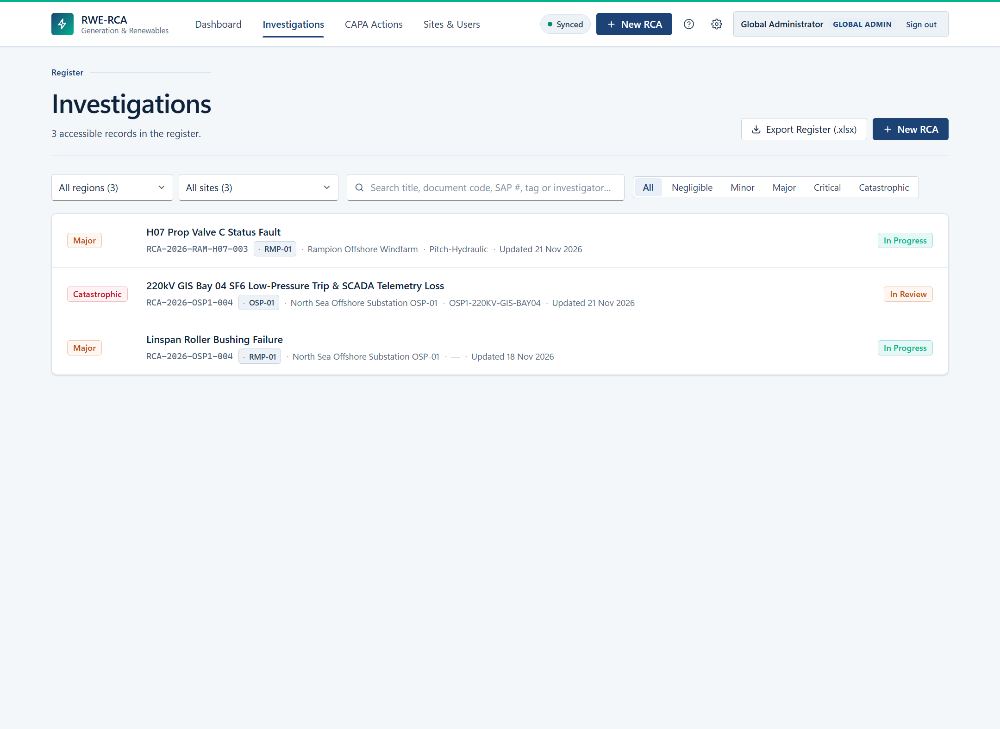
A robust investigation begins with an incontrovertible problem statement. The RWE-RCA Platform enforces the 5W2H Framework (What, Where, When, Who, Why, How, How Much) to eliminate subjectivity prior to causal modeling.
SAP-NOTIF-4001928) and SAP Work Orders (e.g., WO-8802914). The platform scans all subsequent timeline events and action items, highlighting associated SAP tags across the dossier.
Accurate failure analysis depends on establishing the exact chronological sequence of occurrences preceding, during, and following an upset. The Timeline / SOE module allows investigators to map millisecond-accurate SCADA alarms, protection relay trips, operator actions, and post-trip inspections.
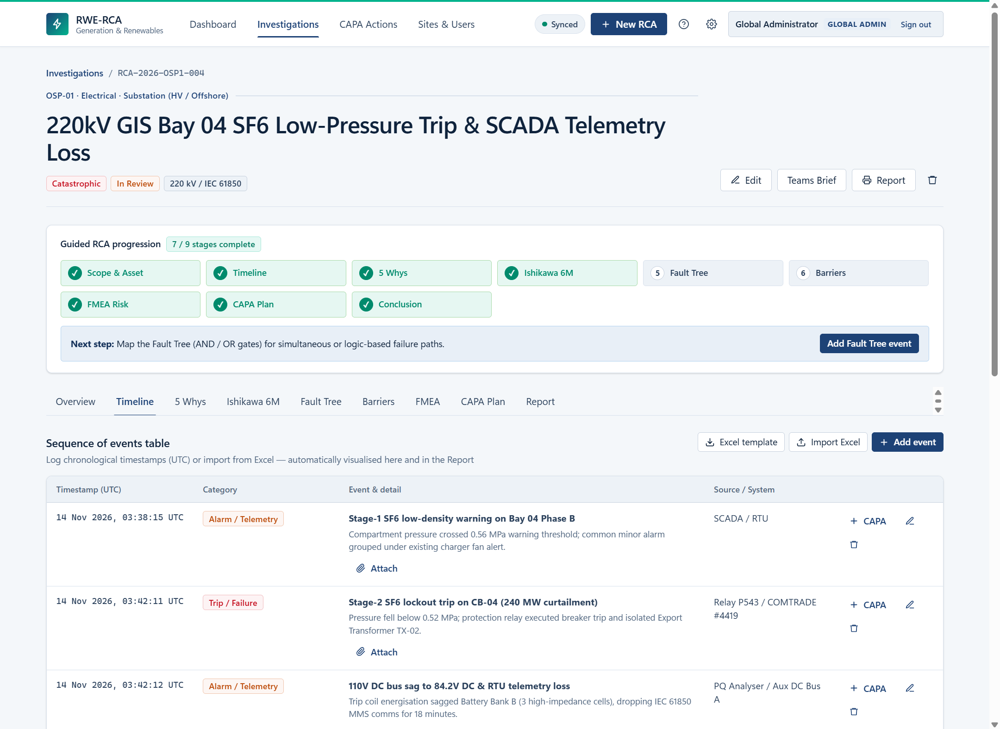
| Phase Classification | Definition & Operational Scope | Typical Data Sources |
|---|---|---|
| Pre-Fault / Baseline | Operating parameters prior to initiation (ambient temp, oil pressure, line loading). | PI System historian, SCADA logs, meteorological mast data. |
| Trigger Event | The initial anomaly or deviation initiating the failure cascade. | Relay trip buffer, micro-switch signal, vibration trip sensor. |
| Trip / Outage Event | The physical disconnection, breaker opening, or plant shutdown. | Main circuit breaker auxiliary contact, IEC 61850 GOOSE message. |
| Containment | Immediate emergency actions taken to prevent secondary asset damage. | Fire suppression discharge, emergency isolation, offshore evacuation. |
| Recovery & Inspection | First-response investigation, damage survey, and temporary stabilization. | Oil lab spectrometry results, borescope footage, relay event records. |
The 5 Whys methodology drills down through successive layers of symptoms to expose underlying systemic and organizational deficiencies. The RWE-RCA Platform features a real-time dynamic SVG Causal Flow Tree that connects each question visually.
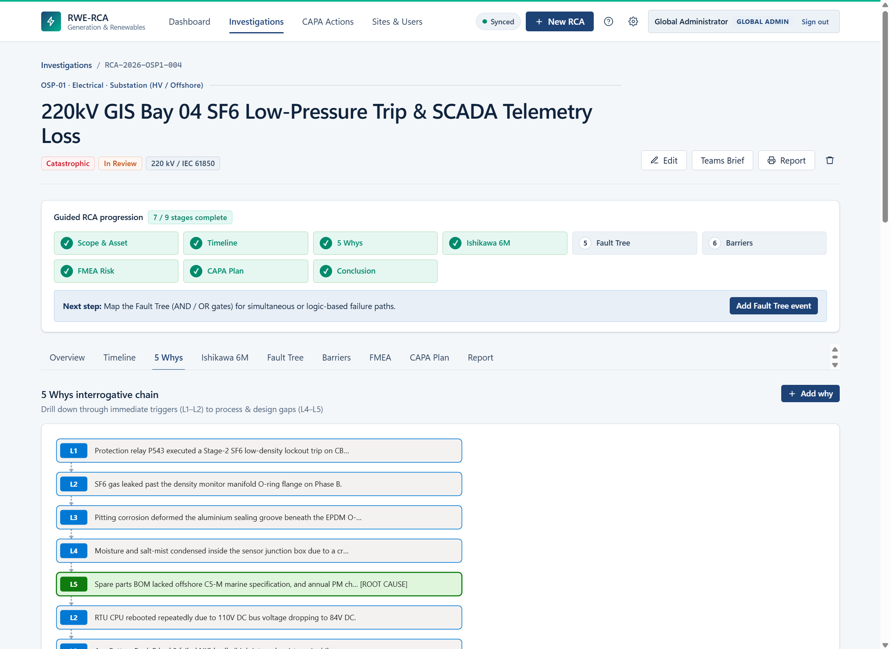
A critical flaw in standard 5 Whys exercises is logical disconnect between steps. The RWE-RCA platform incorporates an automated Reverse-Read ("Therefore") Logic Engine. Once the root cause is identified, the investigator verifies the causal chain in reverse:
If any "Therefore" statement does not hold true under peer engineering review, the branch must be restructured before moving to CAPA formation.
For multifaceted industrial breakdowns involving equipment, human factors, and environmental extremes, the Ishikawa 6M Diagram ensures no causal domain is overlooked.
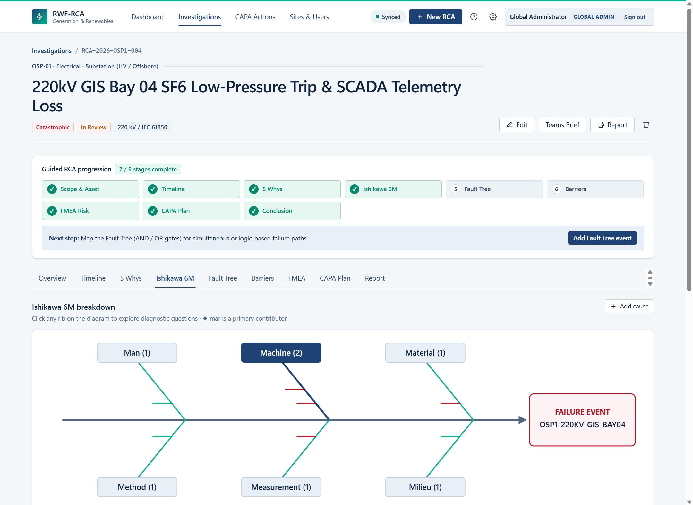
| Vector | Energy Infrastructure Focus | Sample Findings |
|---|---|---|
| Machine / Asset | Hardware, switchgear, pumps, bearings, turbines, transformers, telemetry. | SF6 micro-leak at seal seat, mechanical fatigue crack on impellor. |
| Method / Procedure | Maintenance SOPs, commissioning guidelines, switching protocols. | Outdated OEM maintenance manual; missing dual-torque verification. |
| Material / Supplies | Consumables, metallurgy, oil viscosity, seal elastomeric compounds. | Non-compliant O-ring batch installed during scheduled overhaul. |
| Manpower / Human | Training, competency verification, shift handover clarity, fatigue. | Contractor technician uncertified on 220kV GIS pressurization kit. |
| Measurement | Calibration certificates, gauge accuracy, transducer drift, SCADA polling. | Analog manometer reading 0.4 bar higher than actual chamber pressure. |
| Milieu / Environment | Offshore marine salt spray, high humidity, vibration, storm gale forces. | Salt-crust corrosion on enclosure breather valve; thermal cycling. |
When catastrophic incidents result from multiple concurrent component failures or interlock bypasses, Fault Tree Analysis (FTA) provides a rigorous mathematical and logical structure compliant with IEC 61025.
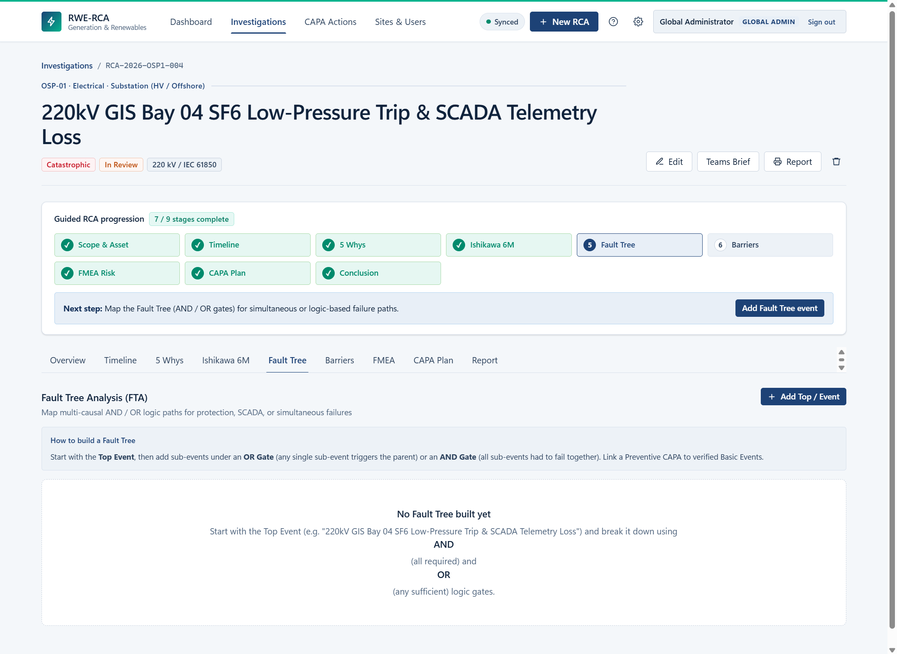
Adapted from Prof. James Reason's systemic accident model, Barrier Analysis maps the sequential defensive safeguards designed to prevent an operational hazard from escalating into asset loss or human harm.
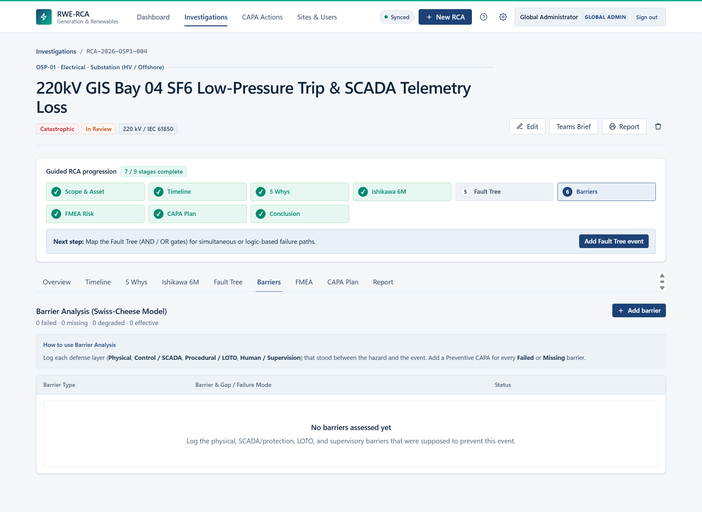
| Defense Layer | Engineered Safeguard | Investigated Barrier Failure Mode |
|---|---|---|
| 1. Physical / Hardware | Pressure vessels, burst disks, O-ring seals, blast walls, enclosures. | O-ring deformed; burst disk corroded from marine atmosphere. |
| 2. Operational / Automation | SCADA interlocks, differential current relays, auto-trips, UPS backup. | SCADA fiber optic switch offline; alarm suppressed by faulty logic. |
| 3. Administrative / SOPs | Permit to Work (PTW), torque specs, shift check sheets, calibration logs. | Maintenance checklist signed off without physical gauge check. |
| 4. Emergency / Mitigative | Emergency power shutdown, fire deluge systems, remote islanding. | Manual trip switch delayed 22 minutes due to communication lag. |
Failure Mode and Effects Analysis provides numerical risk scoring compliant with IEC 60812. Each identified failure mechanism is evaluated on a 1-to-10 scale across three independent dimensions to yield a Risk Priority Number (RPN).
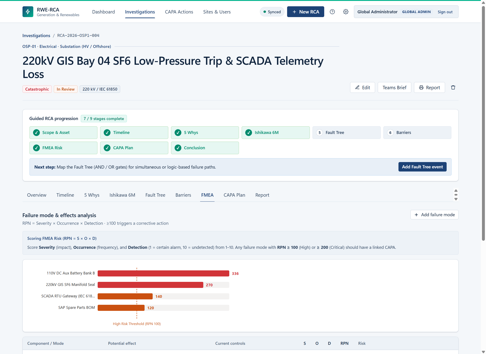
$$\text{RPN} = \text{Severity (S)} \times \text{Occurrence (O)} \times \text{Detection (D)}$$ RPN scores range from $1$ to $1000$. RWE operating policy mandates immediate engineering intervention according to the following matrix:
| RPN Range | Risk Classification | Required Action Timeline | Governance Level |
|---|---|---|---|
| RPN ≥ 200 | High / Critical | Immediate containment action within 48 hours; permanent engineering CAPA within 30 days. | Head of Engineering & Station Director Approval |
| 125 ≤ RPN < 200 | Medium Risk | Implement corrective action prior to next scheduled maintenance outage (60–90 days). | Site Operations Manager Approval |
| RPN < 125 | Low Risk | Routine monitoring; incorporate into standard annual maintenance cycle. | Lead Reliability Engineer Approval |
An investigation is only as effective as the permanence of its corrective solutions. The CAPA Tracker enforces accountability by assigning owners, target completion dates, hierarchy of control classifications, and direct Microsoft Outlook calendar integration.
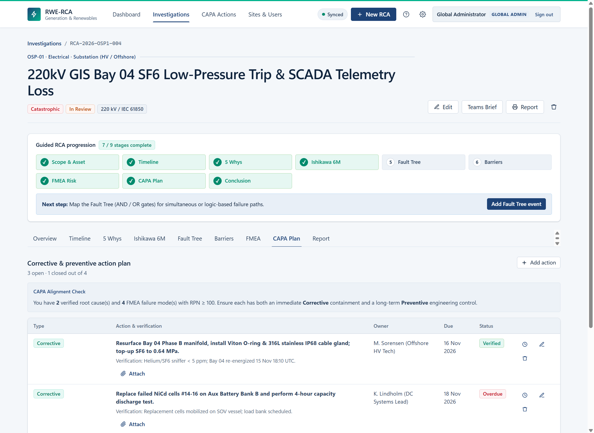
To satisfy RWE quality policies and international regulatory scrutiny, investigations must undergo formal peer review prior to official closure. The Conclusion tab enforces a multi-tier electronic sign-off protocol coupled with a 6-point pre-closure checklist.
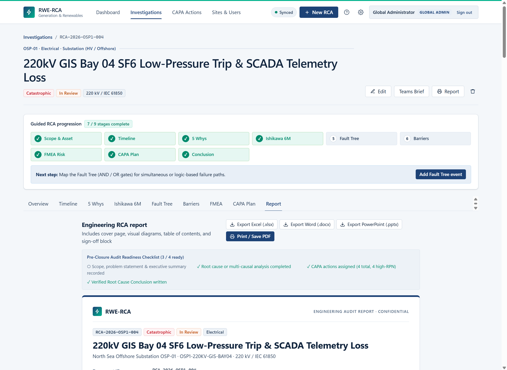
| Sign-off Role | Responsibilities Verified | Requirements for Approval |
|---|---|---|
| Lead Investigator | Fact-finding accuracy, timeline veracity, evidence completeness. | All 5 Whys, Ishikawa, and timeline nodes substantiated by data. |
| Technical Reviewer | Engineering validity of root causes and proposed hardware changes. | Independent Senior Engineer verification; no single-point flaws remain. |
| HSE & Quality Lead | Compliance with environmental, health, and statutory safety standards. | Regulatory reporting requirements satisfied; zero safety compromises. |
| Station / Asset Director | Budgetary approval, resource allocation for CAPA engineering, closure. | All CAPAs funded, assigned, and accepted by maintenance leadership. |
RWE-RCA provides four export options tailored for diverse stakeholder audiences—from executive board presentations to maintenance planning spreadsheets.
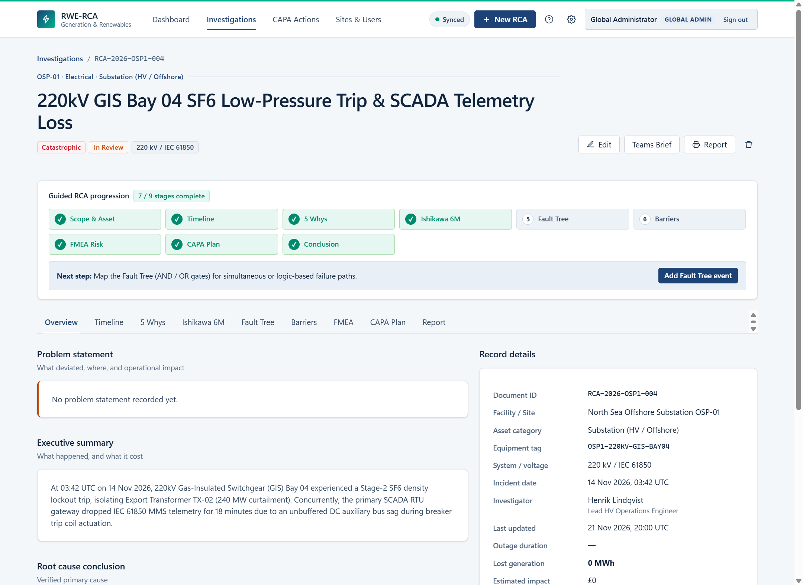
| Format | Target Audience | Contents & Layout Features |
|---|---|---|
| Formal PDF Dossier | Regulatory bodies, HSE inspectors, insurers, archive repositories. | Standard A4 printable layout, full color diagrams, sign-off blocks, audit history. |
| Word Document (.docx) | Engineering working groups, project managers, contract reviewers. | Fully editable text, styled tables, embedded screenshots, expandable sections. |
| PowerPoint (.pptx) | Executive Board, Operations Review meetings, Shift briefings. | Widescreen 16:9 slides, high-impact KPI summary, visual fishbone, CAPA milestones. |
| Excel Workbook (.xlsx) | Reliability analysts, maintenance planners, SAP data clerks. | Multi-sheet workbook: Overview, Timeline, 5 Whys, Fishbone, FMEA, CAPAs with formulas. |
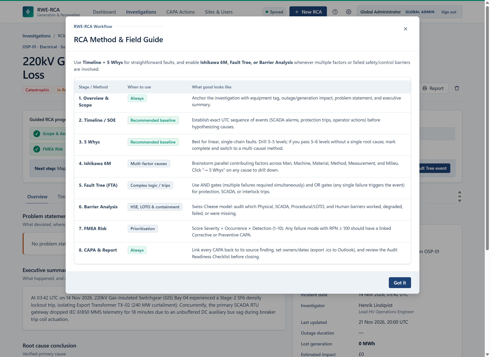
Working in offshore environments, wind turbine nacelles, or underground substations often means complete absence of cellular or Wi-Fi coverage. The RWE-RCA Platform is engineered to deliver 100% operational capability regardless of network status.
| Symptom / Scenario | Probable Cause | Corrective Solution |
|---|---|---|
| Sync Pill shows "Offline" | No network connection detected on offshore platform or remote substation. | Normal behavior. Continue working normally; all data is preserved locally and will sync when network returns. |
| Browser Cache Cleared | User executed "Clear browsing history and local storage" in browser settings. | Connect to corporate network and sign in with Windows SSO; the platform will automatically restore all investigations from cloud. |
| Cannot Edit Investigation | Investigation is marked as "Closed" and "Locked" following final Station Director sign-off. | Request Site Admin or Global Admin to temporarily toggle investigation status back to "In Review". |
| Overdue CAPA Notifications | Action item target date has passed without verification sign-off. | Assigned action owner must complete verification notes and click "Mark Complete" or request an approved date extension. |